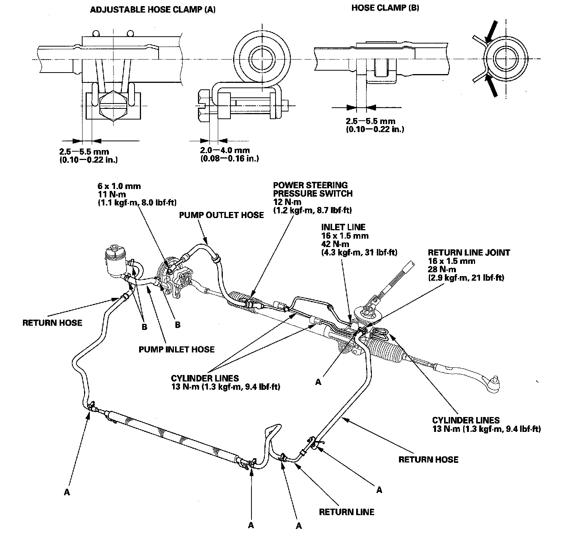

Power Steering Line/Hose: Service and Repair
Power Steering Hose, Line, and Pressure Switch ReplacementNote these items during installation:
^ Connect each hose to the corresponding line securely until it contacts the stop on the line. Install the clamp or adjustable clamp at the specified distance from the hose end as shown.
^ Check all clamps for deterioration or deformation; replace the clamps with new ones if necessary.
^ Add the recommended power steering fluid to the specified level on the reservoir and check for leaks.
